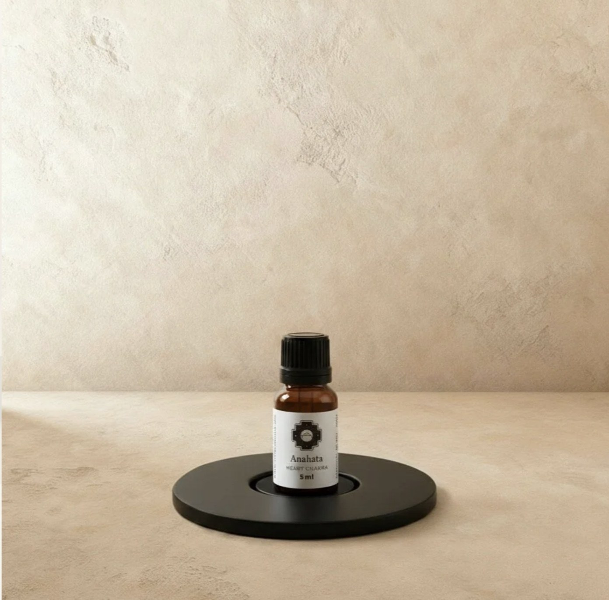
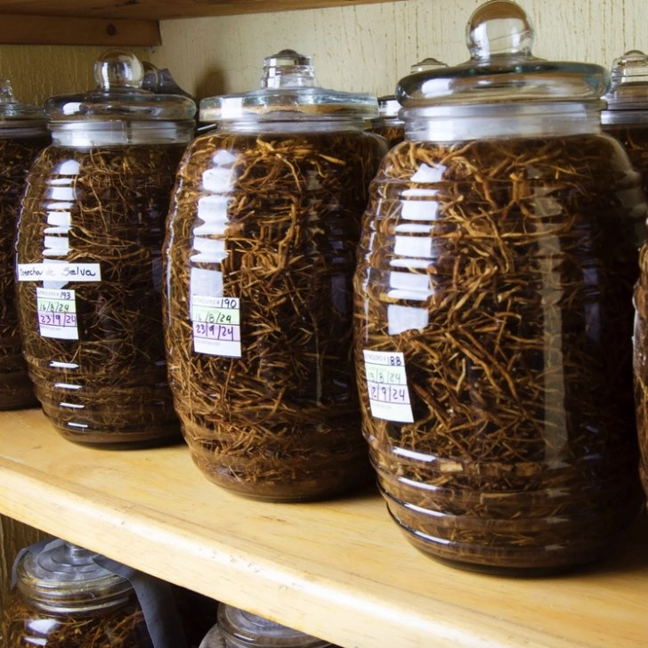
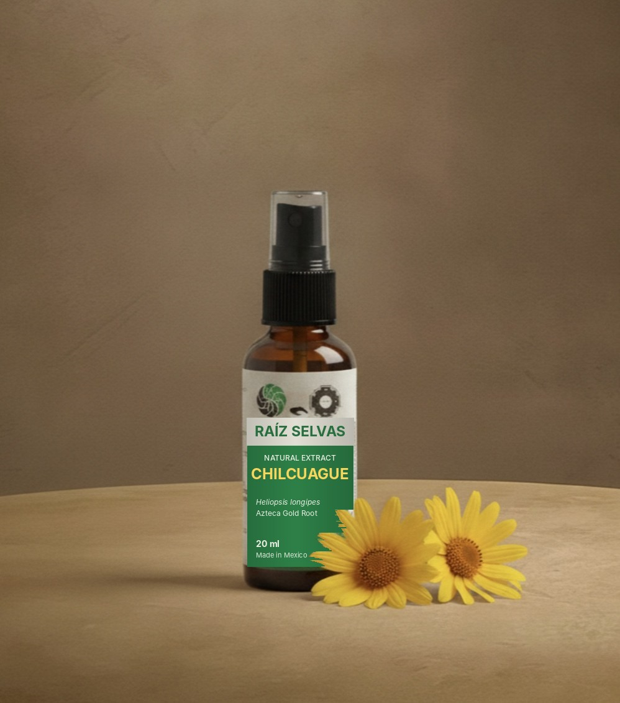

It was never about taking from nature.
It was about letting nature support us, and pouring back into the rivers we once took from.
Who they are
Chaka means bridge.
In Quechua, the ancient language of the Andes.

A bridge between cultures and traditions. A bridge of consciousness. Chaka was born in 2014, when its founder Filippo Tocchio travelled through Colombia and South America searching for his own healing, and found it with traditional doctors in indigenous villages.
What began as one person's journey became a way of carrying these remedies to Europe without stripping them of where they came from. Every essence is met at its source. It is gathered with prayer and clear intention, and kept as pure and concentrated as the land gave it.
"Nature is pure medicine itself."
The hands behind it
Every bottle has a name and a place.
Putumayo · Colombia
The El Diviso community of the Cofán people, keepers of native medicinal plants. Agua Florida made by Abuela Vitelia.
Lima · Pucallpa · Peru
Essences from botanist and medicine woman Lucy Pedragas. Fragrances and hand-sewn fabrics from the Shipibo people.
Zhuracpamba · Ecuador
Ceramic pipes by artisan Rubén Silva. Temazcal teachings, the womb of the Mother, from Taita Alejo.
Rio Branco · Brazil
Rapéh sourced directly from the Phaspy Ninawa family healing centre.
Central Mexico
Chilcuague root from farmers who work with respect for the land, prepared by Raíz Selvas.
Corfu · Greece
Wild sage harvested by hand by a local medicine woman.
Natural, fairly traded, bought directly. Chaka supports local producers, artisans and indigenous communities through knowledge, relationships and community.
Major Arcana · XVII
The Star. What we take, we return.
After the tower falls, The Star kneels at the water's edge beneath an open sky. One vessel she pours back into the pool, the other onto the dry earth. Nothing is kept. Nothing is hoarded. She replenishes the source that once replenished her.
It is the card of restoration and renewed faith. The quiet knowing that balance returns when we stop grasping and begin to give back. Water to water, life to land, the cycle made whole again.
This is the spirit Chaka works in. A root is lifted from Mexican soil, and a forest is planted in its place. Water is drawn, and an aquifer is protected.
Restoring balance
Forests and water, given back.
The Chilcuague extract is made by Raíz Selvas, a Mexican company committed to reforestation and to preserving water and the aquifer basins that feed whole regions. Every bottle supports their reforestation and water protection projects.
The roots come directly and fairly from Mexican farmers who work sustainably, with respect for the land they live from. The plant is honoured, the soil is replanted, and the rivers keep running.

In focus · Natural remedy

Chilcuague. The Azteca Gold Root.
Heliopsis longipes · Extract, 20 ml
A root cherished for centuries by the indigenous cultures of central Mexico as part of their everyday care.
The first spray tingles and warms. That's the root waking things up.
- Mouth & gums: fresh breath, vital gums, everyday oral care.
- Throat: an old folk remedy when the seasons turn.
- Digestion: comfort for the stomach.
- Vitality: gets the saliva flowing, wakes the senses.
- Skin: soothes minor irritations and insect bites.
How to use: 1–3 sprays into the mouth, then breathe naturally, several times a day. Or 1–3 sprays onto the skin.
Based on traditional use. Not intended to diagnose, treat, cure or prevent any disease. If you have a medical condition, speak with a healthcare professional first.
What they stand for
01
A bridge
Between cultures, between ancestral knowledge and modern life.
02
Met at the source
Bought directly and fairly, from the people who know the plant.
03
Purity
Gathered with intention, the energy of the source kept whole.
04
Giving back
Forests replanted, water protected, communities supported.
Receive what the earth offers. Return it to the water.